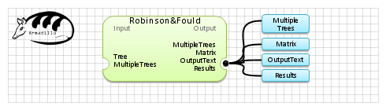

| Name | Robinson&Fould | |
| View |  | |
| Publication(s) | Robinson, D.R. et L.R. Foulds. (1981). Comparison of phylogenetic trees. Math Biosci., volume 53, pages 131-147. | |
| Website | trex.bioinfo.uqam.ca | |
| Description | Calculate the Robinson & Fould distance between 2 or more phylogenetic tree.
(Created by Vladimir Makarenkov) | |
| Input (2) |
Tree MultipleTrees | |
| Output (4) |
OutputText MultipleTrees Results Matrix | |
| Keywords (1) | Distance, Tree | |
| Related (1) | TreeDist (Phylip) | |
| Sample workflow | RobinsonFould.properties.db |